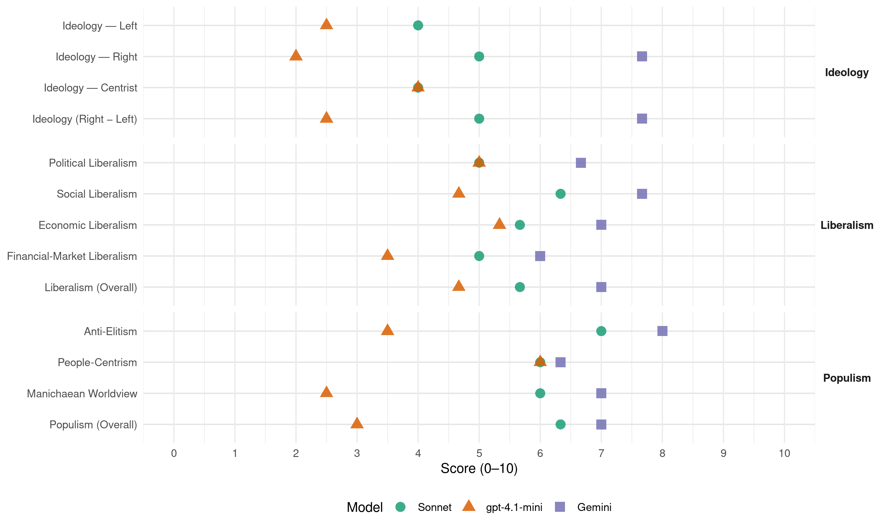

BDZ (Serbia, 2016)
manifesto_id 95903_201604
Get full text: This site shows derived annotations and short verbatim quotes only. The full manifesto text is © Manifesto Project / WZB — obtain it via manifesto-project.wzb.eu using the manifesto_id above.
Headline scores
| Dimension | Sonnet | gpt-4.1-mini | Gemini |
|---|---|---|---|
| Populism (Overall) | 6.3 | 3.0 | 7.0 |
| Anti-Elitism | 7.0 | 3.5 | 8.0 |
| People-Centrism | 6.0 | 6.0 | 6.3 |
| Manichaean Worldview | 6.0 | 2.5 | 7.0 |
| Ideology (Right − Left) | 5.0 | 2.5 | 7.7 |
| Liberalism (Overall) | 5.7 | 4.7 | 7.0 |
| Political Liberalism | 5.0 | 5.0 | 6.7 |
| Social Liberalism | 6.3 | 4.7 | 7.7 |
| Economic Liberalism | 5.7 | 5.3 | 7.0 |
| Financial-Market Liberalism | 5.0 | 3.5 | 6.0 |
Evidence per dimension
Economic Liberalism
Gemini · score 8.0 · verified · chunk 1
“slobodi tržišta u ambijentu zdrave konkurencije”
Privredni razvoj je neophodno bazirati na slobodi tržišta u ambijentu zdrave konkurencije. Monopolizacija i nelojalna konkurencija
Gemini · score 6.0 · verified · chunk 2
“mobiliše kapital lokalnih privrednika i preduzetnika”
Zato je neophodno da se mobiliše kapital lokalnih privrednika i preduzetnika iz dijaspore koji su privrženi svom rodnom kraju
Gemini · score 7.0 · verified · chunk 3
“razvijati srednja i mala preduzeća”
Omogućiti ambijent ulaganja investitorima i razvijati srednja i mala preduzeća (ukidanjem ili smanjenjem taksi, povoljnim iznajmljivanjem
gpt-4.1-mini · score 7.0 · verified · chunk 1
“slobodi tržišta u ambijentu zdrave konkurencije”
Privredni razvoj je neophodno bazirati na slobodi tržišta u ambijentu zdrave konkurencije. Monopolizacija i nelojalna konkurencija treba se spriječiti po svaku cijenu.
gpt-4.1-mini · score 7.0 · verified · chunk 2
“liberalizovati, pa time pored državnog penzijskog fonda ponuditi i prikladne privatne fondove”
Tržište penzijskog osiguranja treba liberalizovati, pa time pored državnog penzijskog fonda ponuditi i prikladne privatne fondove, gdje će svaki građanin moći da bira svog ponuđača.
gpt-4.1-mini · score 2.0 · verified · chunk 3
“koruptivne radnje prilikom privatizacije Tekstilnog kombinata”
Kadrovi SDP-ove lokalne vlasti umiješani su u koruptivne radnje prilikom privatizacije Tekstilnog kombinata „Raška“ čime je više stotina radnika ostalo bez posla, reprogramskih projekata i otpremnina.
Sonnet · score 6.0 · verified · chunk 1
“slobodi tržišta u ambijentu zdrave konkurencije”
Privredni razvoj je neophodno bazirati na slobodi tržišta u ambijentu zdrave konkurencije. Monopolizacija i nelojalna konkurencija treba se spriječiti po svaku cijenu.
Sonnet · score 6.0 · verified · chunk 2
“Tržište penzijskog osiguranja treba liberalizovati”
Tržište penzijskog osiguranja treba liberalizovati, pa time pored državnog penzijskog fonda ponuditi i prikladne privatne fondove, gdje će svaki građanin moći da bira svog ponuđača.
Sonnet · score 5.0 · verified · chunk 3
“ukidanjem ili smanjenjem taksi, povoljnim iznajmljivanjem”
Omogućiti ambijent ulaganja investitorima i razvijati srednja i mala preduzeća (ukidanjem ili smanjenjem taksi, povoljnim iznajmljivanjem gradskog zemljišta, pojednostavljivanjem birokratskih obaveza
Financial-Market Liberalism
Gemini · score 5.0 · verified · chunk 1
“Finansijski sektor treba struktuirati prema potrebama”
promovirati obim i kvalitet investicija radi povećanja zaposlenosti. Finansijski sektor treba struktuirati prema potrebama svih učesnika u ekonomiji
Gemini · score 7.0 · verified · chunk 2
“pored državnog penzijskog fonda ponuditi i prikladne privatne fondove”
Tržište penzijskog osiguranja treba liberalizovati, pa time pored državnog penzijskog fonda ponuditi i prikladne privatne fondove, gdje će svaki građanin moći
gpt-4.1-mini · score 5.0 · verified · chunk 1
“finansijski sektor treba struktuirati prema potrebama”
Finansijski sektor treba struktuirati prema potrebama svih učesnika u ekonomiji, a ne obratno. Treba ublažiti regionalne neravnoteže u ekonomskoj snazi i ponuditi ambijent za korištenje svih resursa u svim mjestima i općinama.
gpt-4.1-mini · score 2.0 · verified · chunk 3
“korupcijskim radnjama vlasnik više miliona eura u gotovini”
Rasim Ljajić je zahvaljujući kriminalnim radnjama vlasnik više miliona eura u gotovini koji kruže u zelenaškim poslovima u Novome Pazaru i drugim krajevima.
Sonnet · score 5.0 · verified · chunk 1
“Finansijski sektor treba struktuirati prema potrebama”
Finansijski sektor treba struktuirati prema potrebama svih učesnika u ekonomiji, a ne obratno.
Sonnet · score 6.0 · verified · chunk 2
“prikladne privatne fondove, gdje će svaki građanin moći da bira”
Tržište penzijskog osiguranja treba liberalizovati, pa time pored državnog penzijskog fonda ponuditi i prikladne privatne fondove, gdje će svaki građanin moći da bira svog ponuđača.
Sonnet · score 4.0 · verified · chunk 3
“kreditno zadužen za višemilionske cifre”
Novi Pazar je kreditno zadužen za višemilionske cifre, zbog čega građani otplaćuju 1.200.000 eura godišnjih rata
Political Liberalism
Gemini · score 7.0 · verified · chunk 1
“obezbijediti vladavinu prava uz nezavisno sudstvo”
Treba obezbijediti vladavinu prava uz nezavisno sudstvo, zaštićena imovinska prava i slobodan pristup tržištu.
Gemini · score 6.0 · verified · chunk 2
“Prema Ustavu i zakonima Republike Srbije”
5. Nacionalno obrazovanje Bošnjaci u Srbiji još uvijek ne uživaju apsolutno pravo na nacionalno obrazovanje, iako u posljednjim godinama ima pomaka u tom pravcu. Prema Ustavu i zakonima Republike Srbije, Bošnjaci kao i svi ostali
Gemini · score 7.0 · verified · chunk 3
“eliminisanje mita i korupcije”
pojednostavljivanjem birokratskih obaveza, strogim nadzorom i eleminisanjem mita i korupcije). Sve ove potencijale treba valjano brendirati
gpt-4.1-mini · score 7.0 · verified · chunk 1
“transparentnost trošenja javnih prihoda”
Radi bolje transparentnosti trošenja javnih prihoda treba namjenski odrediti korisnike poreskih prihoda, što će povećati spremnost poreskih obveznika za plaćanje poreza i smanjiti zloupotrebe poreskih prihoda.
gpt-4.1-mini · score 6.0 · verified · chunk 2
“pravo na obrazovanje na maternjem jeziku”
Prema Ustavu i zakonima Republike Srbije, Bošnjaci kao i svi ostali narodi i nacionalne zajednice imaju pravo na obrazovanje na maternjem jeziku, ali i sa nacionalnim sadržajima i kulturom. Država mora obezbijediti uslove da se nastava u sandžačkim i drugim gradovima, gdje se ukaže potreba za učenike bošnjačke nacionalnosti, izvodi na bosanskome jeziku i da ista bude jednakog kvaliteta kao nastava na srpskome jeziku.
gpt-4.1-mini · score 2.0 · verified · chunk 3
“Ustavom zagarantovanog prava na službenu upotrebu bosanskoga jezika”
Republičke vlasti su konstantno ometale implementaciju Ustavom zagarantovanog prava na službenu upotrebu bosanskoga jezika i pisma, te ostvarivanja drugih prava iz oblasti obrazovanja, kulture i informisanja na bosanskome jeziku.
Sonnet · score 6.0 · verified · chunk 1
“slobodnog informisanja i koji će ga zaštiti”
Narodu su potrebni mediji koji će obezbijediti slobodno informisanje i koji će ga zaštiti od trovanja raznim nemoralnim programima.
Sonnet · score 5.0 · verified · chunk 2
“sva raspoloživa pravna, zakonska i politička sredstva”
Bošnjačka demokratska zajednica Sandžaka će inicirati postizanje konsenzusa svih odlučujućih faktora i poduzeti sva raspoloživa pravna, zakonska i politička sredstva kako bi se ovaj problem riješio
Sonnet · score 4.0 · verified · chunk 3
“krađu na izborima kako bi što duže ostali”
SDP-ova lokalna vlast koristi mehanizam i poluge sistema za krađu na izborima kako bi što duže ostali na vlasti
Liberalism (Overall)
Gemini · score 7.0 · verified · chunk 1
“obezbijediti vladavinu prava uz nezavisno sudstvo”
Treba obezbijediti vladavinu prava uz nezavisno sudstvo, zaštićena imovinska prava i slobodan pristup tržištu.
Gemini · score 7.0 · verified · chunk 2
“pored državnog penzijskog fonda ponuditi i prikladne privatne fondove”
Tržište penzijskog osiguranja treba liberalizovati, pa time pored državnog penzijskog fonda ponuditi i prikladne privatne fondove, gdje će svaki građanin moći
Gemini · score 7.0 · verified · chunk 3
“razvijati srednja i mala preduzeća”
Omogućiti ambijent ulaganja investitorima i razvijati srednja i mala preduzeća (ukidanjem ili smanjenjem taksi, povoljnim iznajmljivanjem
gpt-4.1-mini · score 6.0 · verified · chunk 1
“transparentnost trošenja javnih prihoda”
Radi bolje transparentnosti trošenja javnih prihoda treba namjenski odrediti korisnike poreskih prihoda, što će povećati spremnost poreskih obveznika za plaćanje poreza i smanjiti zloupotrebe poreskih prihoda.
gpt-4.1-mini · score 6.0 · verified · chunk 2
“pravo na obrazovanje na maternjem jeziku”
Prema Ustavu i zakonima Republike Srbije, Bošnjaci kao i svi ostali narodi i nacionalne zajednice imaju pravo na obrazovanje na maternjem jeziku, ali i sa nacionalnim sadržajima i kulturom. Država mora obezbijediti uslove da se nastava u sandžačkim i drugim gradovima, gdje se ukaže potreba za učenike bošnjačke nacionalnosti, izvodi na bosanskome jeziku i da ista bude jednakog kvaliteta kao nastava na srpskome jeziku.
gpt-4.1-mini · score 2.0 · verified · chunk 3
“Ustavom zagarantovanog prava na službenu upotrebu bosanskoga jezika”
Republičke vlasti su konstantno ometale implementaciju Ustavom zagarantovanog prava na službenu upotrebu bosanskoga jezika i pisma, te ostvarivanja drugih prava iz oblasti obrazovanja, kulture i informisanja na bosanskome jeziku.
Sonnet · score 6.0 · verified · chunk 1
“slobodi tržišta u ambijentu zdrave konkurencije”
Privredni razvoj je neophodno bazirati na slobodi tržišta u ambijentu zdrave konkurencije. Monopolizacija i nelojalna konkurencija treba se spriječiti po svaku cijenu.
Sonnet · score 6.0 · verified · chunk 2
“Tržište penzijskog osiguranja treba liberalizovati”
Tržište penzijskog osiguranja treba liberalizovati, pa time pored državnog penzijskog fonda ponuditi i prikladne privatne fondove, gdje će svaki građanin moći da bira svog ponuđača.
Sonnet · score 5.0 · verified · chunk 3
“ambijent ulaganja investitorima i razvijati srednja i mala”
Omogućiti ambijent ulaganja investitorima i razvijati srednja i mala preduzeća (ukidanjem ili smanjenjem taksi, povoljnim iznajmljivanjem gradskog zemljišta
Anti-Elitism
Gemini · score 7.0 · verified · chunk 1
“sprege između vladajuće politike i kriminalaca”
Prvi takav ključni udarac kriminalu zadaje se presijecanjem sprege između vladajuće politike i kriminalaca. Kriminalne grupe koje nemaju podršku
Gemini · score 8.0 · verified · chunk 2
“nametnuta od strane lokalnih političkih moćnika”
Najveća pošast koja devalvira obrazovni sistem jeste korupcija u svim svojim oblicima, nametnuta od strane lokalnih političkih moćnika pod čiju direktnu i indirektnu vlast
Gemini · score 9.0 · verified · chunk 3
“lokalne uprave su se uglavnom pretvorile u oligarhijske vlastodršce”
Uz blagoslov republičkih organa vlasti, lokalne uprave su se uglavnom pretvorile u oligarhijske vlastodršce, nerijetko u direktnoj sprezi sa organizovanim kriminalom
gpt-4.1-mini · score 4.0 · verified · chunk 1
“kritike loših postupaka vlasti”
zadržat ćemo pravo argumentirane kritike loših postupaka vlasti kako bismo ukazali na nužnost korjenitih političkih promjena. Uz pomirenje zalagat ćemo se za vraćanje etike u politiku
gpt-4.1-mini · score 3.0 · verified · chunk 3
“lokalne vlasti su se uglavnom pretvorile u oligarhijske vlastodršce”
Uz blagoslov republičkih organa vlasti, lokalne uprave su se uglavnom pretvorile u oligarhijske vlastodršce, nerijetko u direktnoj sprezi sa organizovanim kriminalom, koje kroz razuzdanu korupciju permanentno otuĐuju budžetska sredstva graĐana čime se iz dana u dan povećava nezaposlenost i hara siromaštvo velikih razmjera.
Sonnet · score 5.0 · verified · chunk 1
“sprege između vladajuće politike i kriminalaca”
Prvi takav ključni udarac kriminalu zadaje se presijecanjem sprege između vladajuće politike i kriminalaca. Kriminalne grupe koje nemaju podršku
Sonnet · score 7.0 · verified · chunk 2
“korupcija u svim svojim oblicima, nametnuta od strane lokalnih političkih moćnika”
Najveća pošast koja devalvira obrazovni sistem jeste korupcija u svim svojim oblicima, nametnuta od strane lokalnih političkih moćnika pod čiju direktnu i indirektnu vlast jeste kadriranje nastavnog
Sonnet · score 9.0 · verified · chunk 3
“lokalne uprave su se uglavnom pretvorile u oligarhijske vlastodršce”
Uz blagoslov republičkih organa vlasti, lokalne uprave su se uglavnom pretvorile u oligarhijske vlastodršce, nerijetko u direktnoj sprezi sa organizovanim kriminalom
Ideology — Centrist
gpt-4.1-mini · score 5.0 · verified · chunk 1
“pomirenje je temeljna vrijednost odnosa”
Pomirenje je temeljna vrijednost odnosa meĎu ljudima na pojedinačnom i kolektivnom planu. Osim što pomirenje predstavlja izlaz iz negativnih odnosa izazvanih svaĎom, ovaj pojam označava proces koji dovodi do punog mira, stabilnosti i blagostanja.
gpt-4.1-mini · score 3.0 · verified · chunk 3
“političkim partijama i uticajnim pojedincima”
Zato će Bošnjačka demokratska zajednica Sandžaka odvažno i hrabro nastojati rješavati svako od njih u partnerstvu sa političkim partijama i uticajnim pojedincima.
Sonnet · score 3.0 · verified · chunk 1
“nudimo najbolji program na svim poljima”
čvrstog ubjeđenja da nudimo najbolji program na svim poljima važnim za život pojedinca i zajednice
Sonnet · score 4.0 · verified · chunk 2
“na opću dobrobit građanstva”
poduzeti sva raspoloživa pravna, zakonska i politička sredstva kako bi se ovaj problem riješio na opću dobrobit građanstva
Sonnet · score 5.0 · verified · chunk 3
“rješavati svako od njih u partnerstvu sa političkim”
Zato će Bošnjačka demokratska zajednica Sandžaka odvažno i hrabro nastojati rješavati svako od njih u partnerstvu sa političkim partijama i uticajnim pojedincima
Ideology — Left
gpt-4.1-mini · score 3.0 · verified · chunk 1
“borba protiv siromaštva”
Jedan od ključnih svakodnevnih programa političkog djelovanja mora biti sveobuhvatna borba protiv siromaštva. U tom smislu, moramo imati svijesti i osjećanja odgovornosti prema narodu, a posebno prema siromašnima i ugroženima.
gpt-4.1-mini · score 2.0 · verified · chunk 3
“korupciju permanentno otuĐuju budžetska sredstva graĐana”
Uz blagoslov republičkih organa vlasti, lokalne uprave su se uglavnom pretvorile u oligarhijske vlastodršce, nerijetko u direktnoj sprezi sa organizovanim kriminalom, koje kroz razuzdanu korupciju permanentno otuĐuju budžetska sredstva graĐana čime se iz dana u dan povećava nezaposlenost i hara siromaštvo velikih razmjera.
Sonnet · score 4.0 · verified · chunk 1
“borba protiv siromaštva”
jedan od ključnih svakodnevnih programa političkog djelovanja mora biti sveobuhvatna borba protiv siromaštva
Sonnet · score 4.0 · verified · chunk 2
“svakom građaninu obezbjeđuje minimalna penzija nezavisno od uplaćenih doprinosa”
BDZ se zalaže da se svakom građaninu obezbjeđuje minimalna penzija nezavisno od uplaćenih doprinosa. Ovakav vid penzija može se finansirati putem prihoda od indirektnih poreza
Sonnet · score 4.0 · verified · chunk 3
“nezakonito pribavljanje bogatstva za prvog čovjeka”
Sandžačka demokratska partija predstavlja politiku bez stvarne ideologije čiji je jedini cilj što duže održavanje na vlasti i nezakonito pribavljanje bogatstva za prvog čovjeka
Ideology (Right − Left)
Gemini · score 7.0 · verified · chunk 1
“rješavanje ustavnog statusa bošnjačkog naroda”
Ključni cilj osnivanja i djelovanja Bošnjačke demokratske zajednice je rješavanje ustavnog statusa bošnjačkog naroda u Sandžaku, Srbiji i Crnoj Gori.
Gemini · score 8.0 · verified · chunk 2
“Bošnjaci u Srbiji još uvijek ne uživaju apsolutno pravo na nacionalno obrazovanje”
5. Nacionalno obrazovanje Bošnjaci u Srbiji još uvijek ne uživaju apsolutno pravo na nacionalno obrazovanje, iako u posljednjim godinama ima pomaka
Gemini · score 8.0 · verified · chunk 3
“rješavanja statusa bošnjačkoga naroda i Sandžaka”
republička vlast, kako u prethodnim tako i u ovome sazivu, oglušila se o sve zahtjeve po pitanju rješavanja statusa bošnjačkoga naroda i Sandžaka te kolektivnih prava
gpt-4.1-mini · score 3.0 · verified · chunk 1
“borba protiv siromaštva”
Jedan od ključnih svakodnevnih programa političkog djelovanja mora biti sveobuhvatna borba protiv siromaštva. U tom smislu, moramo imati svijesti i osjećanja odgovornosti prema narodu, a posebno prema siromašnima i ugroženima.
gpt-4.1-mini · score 2.0 · verified · chunk 3
“lokalne vlasti su se uglavnom pretvorile u oligarhijske vlastodršce”
Uz blagoslov republičkih organa vlasti, lokalne uprave su se uglavnom pretvorile u oligarhijske vlastodršce, nerijetko u direktnoj sprezi sa organizovanim kriminalom, koje kroz razuzdanu korupciju permanentno otuĐuju budžetska sredstva graĐana čime se iz dana u dan povećava nezaposlenost i hara siromaštvo velikih razmjera.
Sonnet · score 4.0 · verified · chunk 1
“rješavanje ustavnog statusa bošnjačkog naroda”
Ključni cilj osnivanja i djelovanja Bošnjačke demokratske zajednice je rješavanje ustavnog statusa bošnjačkog naroda u Sandžaku
Sonnet · score 5.0 · verified · chunk 2
“korupcija u svim svojim oblicima, nametnuta od strane lokalnih političkih moćnika”
Najveća pošast koja devalvira obrazovni sistem jeste korupcija u svim svojim oblicima, nametnuta od strane lokalnih političkih moćnika
Sonnet · score 6.0 · verified · chunk 3
“statusa bošnjačkoga naroda i Sandžaka”
oglušila se o sve zahtjeve po pitanju rješavanja statusa bošnjačkoga naroda i Sandžaka te kolektivnih prava Bošnjaka
Ideology — Right
Gemini · score 7.0 · verified · chunk 1
“rješavanje ustavnog statusa bošnjačkog naroda”
Ključni cilj osnivanja i djelovanja Bošnjačke demokratske zajednice je rješavanje ustavnog statusa bošnjačkog naroda u Sandžaku, Srbiji i Crnoj Gori.
Gemini · score 8.0 · verified · chunk 2
“Bošnjaci u Srbiji još uvijek ne uživaju apsolutno pravo na nacionalno obrazovanje”
5. Nacionalno obrazovanje Bošnjaci u Srbiji još uvijek ne uživaju apsolutno pravo na nacionalno obrazovanje, iako u posljednjim godinama ima pomaka
Gemini · score 8.0 · verified · chunk 3
“rješavanja statusa bošnjačkoga naroda i Sandžaka”
republička vlast, kako u prethodnim tako i u ovome sazivu, oglušila se o sve zahtjeve po pitanju rješavanja statusa bošnjačkoga naroda i Sandžaka te kolektivnih prava
gpt-4.1-mini · score 2.0 · verified · chunk 1
“bošnjačko-srpsko pomirenje”
Osim unutarbošnjačkog pomirenja, zalagat ćemo se za bošnjačko-srpsko pomirenje, kao i pomirenje među Srbima i Hrvatima te Srbima i Albancima. Opće pomirenje na Balkanu nužni je preduslov za uspostavu punog mira i stabilnosti
Sonnet · score 4.0 · verified · chunk 1
“ustavnog statusa bošnjačkog naroda”
Ključni cilj osnivanja i djelovanja Bošnjačke demokratske zajednice je rješavanje ustavnog statusa bošnjačkog naroda u Sandžaku, Srbiji i Crnoj Gori.
Sonnet · score 5.0 · verified · chunk 2
“Bošnjaci kao i svi ostali narodi i nacionalne zajednice”
Prema Ustavu i zakonima Republike Srbije, Bošnjaci kao i svi ostali narodi i nacionalne zajednice imaju pravo na obrazovanje na maternjem jeziku
Sonnet · score 6.0 · verified · chunk 3
“vraćanje statusa naroda Bošnjacima”
inicira procese koji će dovesti do promjene Ustava Republike Srbije, vraćanje statusa naroda Bošnjacima i formiranje evropske prekogranične regije Sandžak
Manichaean Worldview
Gemini · score 6.0 · verified · chunk 1
“okupljanja svih zdravih snaga”
veoma veliki broj nasilnih narkomana – ne ostavljaju nam izbor osim okupljanja svih zdravih snaga u cilju vraćanja elementarne bezbjednosti
Gemini · score 7.0 · verified · chunk 2
“dokinuti ovu spregu kriminala i obrazovanja”
Bošnjačka demokratska zajednica Sandžaka će nakon ovih izbora dokinuti ovu spregu kriminala i obrazovanja, a svi prosvjetni radnici koji imaju
Gemini · score 8.0 · verified · chunk 3
“kroz razuzdanu korupciju permanentno otuđuju budžetska sredstva”
oligarhijske vlastodršce, nerijetko u direktnoj sprezi sa organizovanim kriminalom, koje kroz razuzdanu korupciju permanentno otuđuju budžetska sredstva građana čime se
gpt-4.1-mini · score 3.0 · verified · chunk 1
“kriminala i političara, veoma izražena bliskost”
Sprega organizovanoga kriminala i političara, veoma izražena bliskost lokalnih vladajućih struktura sa narkoklanovima, skoro uobičajena pojava dilovanja droge na javnim mjestima, pa čak i pred školama
gpt-4.1-mini · score 2.0 · verified · chunk 3
“nasrnuo je na Islamsku zajednicu kao jedini preostali stožer bošnjačke opstojnosti”
Po povratku iz Turske nasrnuo je na Islamsku zajednicu kao jedini preostali stožer bošnjačke opstojnosti u Sandžaku, direktno izazivajući njenu podjelu, nakon dugogodišnjih pokušaja, u partnerstvu sa tadašnjim režimom Vojislava Koštunice.
Sonnet · score 4.0 · verified · chunk 1
“vlast u Sandžaku u neodvojivom zagrljaju”
Svjedoci smo da je vlast u Sandžaku u neodvojivom zagrljaju sa lokalnim, regionalnim, pa i međunarodnim kriminalnim grupama
Sonnet · score 6.0 · verified · chunk 2
“spregu kriminala i obrazovanja”
Bošnjačka demokratska zajednica Sandžaka će nakon ovih izbora dokinuti ovu spregu kriminala i obrazovanja, a svi prosvjetni radnici koji imaju potrebne kvalifikacije
Sonnet · score 8.0 · verified · chunk 3
“nerijetko u direktnoj sprezi sa organizovanim kriminalom”
lokalne uprave su se uglavnom pretvorile u oligarhijske vlastodršce, nerijetko u direktnoj sprezi sa organizovanim kriminalom, koje kroz razuzdanu korupciju permanentno otuđuju budžetska sredstva građana
People-Centrism
Gemini · score 6.0 · verified · chunk 1
“svijesti i osjećanja odgovornosti prema narodu”
U tom smislu, moramo imati svijesti i osjećanja odgovornosti prema narodu, a posebno prema siromašnima i ugroženima.
Gemini · score 5.0 · verified · chunk 2
“očuva u zatečenom stanju i vrati ga narodu”
Islamska zajednica je učinila napore da ovo vakufsko dobro iznova kupi, očuva u zatečenom stanju i vrati ga narodu. Neophodna je temeljita rekonstrukcija
Gemini · score 8.0 · verified · chunk 3
“očuva u zatečenom stanju i vrati ga narodu”
Islamska zajednica je učinila napore da ovo vakufsko dobro iznova kupi, očuva u zatečenom stanju i vrati ga narodu. Neophodna je temeljita rekonstrukcija
gpt-4.1-mini · score 6.0 · verified · chunk 1
“svi građani, posebno oni ugroženi dožive kao svoj”
Naš politički govor mora biti takav da ga svi građani, posebno oni ugroženi dožive kao svoj. Naša politička grupa imat će smisla ako permanentno bude imala principijelan i dosljedan politički rad
Sonnet · score 5.0 · verified · chunk 1
“Ljudi su glavni resurs i subjekt ekonomskog razvoja”
Bošnjačka demokratska zajednica Sandžaka je usvojila sljedeće osnovne principe ekonomskog razvoja: Ljudi su glavni resurs i subjekt ekonomskog razvoja i zato treba prilagoditi ekonomiju prema potrebama ljudi.
Sonnet · score 6.0 · verified · chunk 2
“na opću dobrobit građanstva”
Bošnjačka demokratska zajednica Sandžaka će inicirati postizanje konsenzusa svih odlučujućih faktora i poduzeti sva raspoloživa pravna, zakonska i politička sredstva kako bi se ovaj problem riješio na opću dobrobit građanstva.
Sonnet · score 7.0 · verified · chunk 3
“budžetska sredstva građana čime se iz dana u dan”
kroz razuzdanu korupciju permanentno otuđuju budžetska sredstva građana čime se iz dana u dan povećava nezaposlenost i hara siromaštvo velikih razmjera
Populism (Overall)
Gemini · score 6.0 · verified · chunk 1
“sprege između vladajuće politike i kriminalaca”
Prvi takav ključni udarac kriminalu zadaje se presijecanjem sprege između vladajuće politike i kriminalaca. Kriminalne grupe koje nemaju podršku
Gemini · score 7.0 · verified · chunk 2
“dokinuti ovu spregu kriminala i obrazovanja”
Bošnjačka demokratska zajednica Sandžaka će nakon ovih izbora dokinuti ovu spregu kriminala i obrazovanja, a svi prosvjetni radnici koji imaju
Gemini · score 8.0 · verified · chunk 3
“lokalne uprave su se uglavnom pretvorile u oligarhijske vlastodršce”
Uz blagoslov republičkih organa vlasti, lokalne uprave su se uglavnom pretvorile u oligarhijske vlastodršce, nerijetko u direktnoj sprezi sa organizovanim kriminalom
gpt-4.1-mini · score 4.0 · verified · chunk 1
“kritike loših postupaka vlasti”
zadržat ćemo pravo argumentirane kritike loših postupaka vlasti kako bismo ukazali na nužnost korjenitih političkih promjena. Uz pomirenje zalagat ćemo se za vraćanje etike u politiku
gpt-4.1-mini · score 2.0 · verified · chunk 3
“lokalne vlasti su se uglavnom pretvorile u oligarhijske vlastodršce”
Uz blagoslov republičkih organa vlasti, lokalne uprave su se uglavnom pretvorile u oligarhijske vlastodršce, nerijetko u direktnoj sprezi sa organizovanim kriminalom, koje kroz razuzdanu korupciju permanentno otuĐuju budžetska sredstva graĐana čime se iz dana u dan povećava nezaposlenost i hara siromaštvo velikih razmjera.
Sonnet · score 5.0 · verified · chunk 1
“sprege između vladajuće politike i kriminalaca”
Prvi takav ključni udarac kriminalu zadaje se presijecanjem sprege između vladajuće politike i kriminalaca.
Sonnet · score 6.0 · verified · chunk 2
“korupcija u svim svojim oblicima, nametnuta od strane lokalnih političkih moćnika”
Najveća pošast koja devalvira obrazovni sistem jeste korupcija u svim svojim oblicima, nametnuta od strane lokalnih političkih moćnika pod čiju direktnu i indirektnu vlast jeste kadriranje nastavnog
Sonnet · score 8.0 · verified · chunk 3
“oligarhijske vlastodršce, nerijetko u direktnoj sprezi”
lokalne uprave su se uglavnom pretvorile u oligarhijske vlastodršce, nerijetko u direktnoj sprezi sa organizovanim kriminalom
Social Liberalism